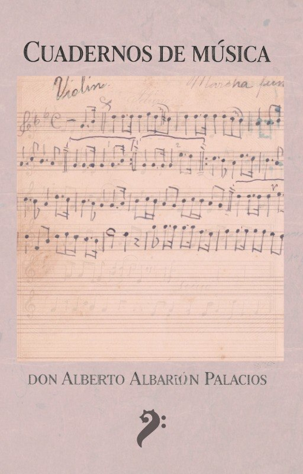

Cuadernos de Música de Don Alberto Albarrán Palacios
- Edición e introducción
- Jorge Amós Martínez Ayala
- Transcripción musical
- Allan Ulises Zepeda Ibarra
- Revisión y co-edición musical
- Amanda Zoar Cuevas Cárcamo
- Estudio y co-edición musical
- Héctor Isaac Borges Montaño
- ISBN
- 978-607-69464-4-2
- Páginas
- 109 · Descarga gratuita
Reseña
Reseña del volumen registrada en el catálogo ISBN.
Registro ISBN: isbnmexico.indautor.cerlalc.org